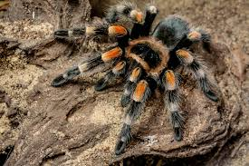

Turantulas

For those who are scared of spiders I would like to formally apologize. However they are a very cool and interesting aspect of life on our planet. There are currently 1100 species of tarantulas on this planet. Luckily for us there are only 29 species found in the United States. Also don't worry none of these are found in Illinois. These beautiful creatures get a bad reputation for how they look. There might even be someone in your family that receives the same treatment for how the dress,talk, or act. We should judge whether we should learn about them.
The Red Knee tarantula is famously known as the tarantula people picture when thinking about these creatures. They originally come from the west coast of Mexico and prefer dry savannas and shrublands. This spider is considered the perfect beginner pet for any tarantula enthusiast.
Very stylish looking spider. They are very docile and choose to run away before attempting to defend themselves. They are very fast (probably due to the awesome boots they wear) and are prone to jumping.
This beautiful tarantula is currently listed as critically endangered. This tarantula has never been recorded to have killed any human. However its venom is considered medically significant. The venom can cause fast heart rate, sweating, headaches, swellling and cramping. These symptoms could last for up to a week. When we think of beautiful looking animals we precive them as harmless. This however isn't true when it comes to this tarantula, steer clear from it.